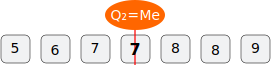
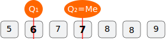
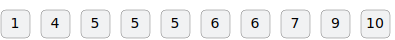
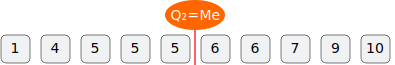
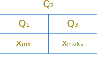
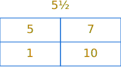
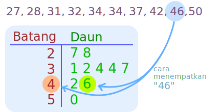

Kuartil dan Box Plot
Kuartil
Kuartil adalah tiga nilai yang posisinya yang membagi data yang nilai data itu sudah terurut menjadi empat bagian yang sama banyak.
- Urutkan data dari nilai terkecil ke nilai yang terbesar.
- Bagi dua data menjadi dua bagian yang sama banyak. Data di posisi yang membagi dua data itu adalah
MedianatauKuartil 2dengan simbol \(\text{Q}_2\). - Bagi dua data yang di sebelah kiri \(\text{Q}_2\). Data di posisi yang membagi dua data itu adalah
Kuartil 1dengan simbol \(\text{Q}_1\). - Bagi dua data yang di sebelah kanan \(\text{Q}_2\). Data di posisi yang membagi dua data itu adalah
Kuartil 3dengan simbol \(\text{Q}_3\).
Contoh 1
Carilah \(\text{Q}_1\), \(\text{Q}_2\), dan \(\text{Q}_3\) dari: 6, 5, 8, 7, 9, 8, 7
Data sudah terurut, yaitu:
Menentukan \(\text{Q}_2\) atau \(\text{Me}\), cari data ke berapa yang membagi data menjadi 2 (dua) bagian yang sama banyak.

Diperoleh \(\text{Q}_2\) adalah data ke-4. Nilai \(\text{Q}_2 = \text{Me} = x_4 = 7\).
Menentukan \(\text{Q}_1\) dengan meninjau data sebelah kiri \(\text{Q}_2\), kemudian cari data ke berapa yang membagi data itu menjadi 2 (dua) bagian yang sama banyak.

Diperoleh \(\text{Q}_1\) adalah data ke-2, sehingga nilai \(\text{Q}_1 = x_2 = 6\).
Menentukan \(\text{Q}_3\) dengan meninjau data sebelah kanan \(\text{Q}_2\), kemudian cari data ke berapa yang membagi data itu menjadi 2 (dua) bagian yang sama banyak.
Diperoleh \(\text{Q}_3\) adalah data ke-6. Nilai \(\text{Q}_3 = \text{Me} = x_6 = 8\).
Jadi, sudah ditemukan bahwa: \[\text{Q}_1 = 6\] \[\text{Q}_2 = 7\] \[\text{Q}_3 = 8\]
Contoh 2
Carilah \(\text{Q}_1\), \(\text{Q}_2\), dan \(\text{Q}_3\) dari: 1, 3, 4, 7, 11, 12, 14, 19
Langka 1: Data sudah terurut.
Langka 2: Mencari \(\text{Q}_2\) dan diperoleh \(\text{Q}_2 = \text{Me} = \dfrac{x_4 + x_5}{2}=\dfrac{7+11}{2}=9\).
Langka 3: Mencari \(\text{Q}_1\) dan diperoleh \(\text{Q}_1 = \dfrac{x_2 + x_3}{2} = \dfrac{3+4}{2}=3\frac{1}{2}\).
Langka 4: Mencari \(\text{Q}_3\) dan diperoleh \(\text{Q}_3 = \dfrac{x_6 + x_7}{2} = \dfrac{12+14}{2}=13\).
Jadi sudah ditemukan bahwa: \[\text{Q}_1 = 3\frac{1}{2}\] \[\text{Q}_2 = \text{Me} = 9\] \[\text{Q}_3 = \frac{12+14}{2}=13\]
Contoh 3
Carilah \(\text{Q}_1\), \(\text{Q}_2\), dan \(\text{Q}_3\) dari: 1, 2, 3, 4, 5, 6, 7, 8, 9
Data sudah terurut
Mencari \(\text{Q}_2\) dan diperoleh \(\text{Q}_2 = \text{Me} = x_5 = 5\).
Mencari \(\text{Q}_1\) dan diperoleh \(\text{Q}_1 = \dfrac{x_2 + x_3}{2}= \dfrac{2+3}{2}=2\frac{1}{2}\).
Mencari \(\text{Q}_3\) dan diperoleh \(\text{Q}_3 = \dfrac{x_7 + x_8}{2} = \dfrac{7+8}{2}=7\frac{1}{2}\).
Jadi sudah ditemukan bahwa: \[\text{Q}_1 = 2\frac{1}{2}\] \[\text{Q}_2 = \text{Me} = 5\] \[\text{Q}_3 = 7\frac{1}{2}\]
Contoh 4
Carilah \(\text{Q}_1\), \(\text{Q}_2\), dan \(\text{Q}_3\) dari: 1, 4, 5, 5, 6, 6, 6, 7, 9, 10
Data sudah terurut.

Mencari \(\text{Q}_2\) dan diperoleh \(\text{Q}_2 = \text{Me} = \dfrac{x_5 + x_6}{2} = \dfrac{5+6}{2}=5\frac{1}{2}\).

Mencari \(\text{Q}_1\) dan diperoleh \(\text{Q}_1 = x_3 = 5\).
Mencari \(\text{Q}_3\) dan diperoleh \(\text{Q}_3 = x_8 = 7\).
Jadi sudah ditemukan bahwa: \[\text{Q}_1 = 5\] \[\text{Q}_2 = \text{Me} = 5\frac{1}{2}\] \[\text{Q}_3 = 7\]
Statistik Lima Serangkai
Statistik lima serangkai terdiri dari nilai data terkecil (\(\text{x}_\text{min}\)), Q₁, Q₂, Q₃, dan data terbesar (\(\text{x}_\text{maks}\)).

Statistik lima serangkai data pada contoh 4:

Jangkauan Antar Kuartil
Jangkauan antar kuartil dalam bahasa Inggris Interquartil Range (IQR) biasa disebut juga Hamparan (H).
\[\textbf{IQR} = \textbf{H} = \text{Q}_3 - \text{Q}_1\]
Dari data pada contoh 1:
Jangkauan Antar Kuartil-nya adalah:
\[\textbf{IQR} = \textbf{H} = \text{Q}_3 - \text{Q}_1 = 8 − 6 = 2\]
Pagar dan Pencilan
Pagar Dalam (PD) = \(\text{Q}_1 - \frac{3}{2}\,\text{H}\)
Pagar Luar (PL) = \(\text{Q}_3 + \frac{3}{2}\,\text{H}\)
Dari data pada Contoh 2.
Diperoleh:
PD = \(5 - \frac{3}{2}\times(7 - 5) = 2\)
PL = \(7 + \frac{3}{2}\times(7 - 5) = 10\)
Langkah:
\(\textbf{L} = \frac{3}{2}\textbf{H} = \frac{3}{2}(\text{Q}_3 - \text{Q}_1)\)
Pencilan adalah data yang berada di luar pagar, yaitu data yang nilainya lebih kecil dari nilai Pagar Dalam atau nilainya lebih besar dari Pagar Luar.
Dari data pada Contoh 2.
Pencilannya adalah data yang tidak berada di antara nilai 2 dan 10.
Pencilan pada data itu adalah \(1\).
Diagran Kotak Garis
Diagram Kotak Garis (Box and Whisker Plot) menyajikan statistik lima serangkai.
Berikut contoh Diagram Kotak Garis untuk statistik lima serangkai: \(\text{x}_\text{min}=2\), \(\text{Q}_1=4\), \(\text{Q}_2=5\), \(\text{Q}_3=7\), dan \(\text{x}_\text{maks}=8\).

Dari data pada Contoh 4
Berikut ini Diagram Kotak Garis dari data pada Contoh 4.
Pada Diagram Kotak Garis di atas tidak diperlihatkan keberadaan Pencilan.
Jika Pencilan hendak ditampilkan, maka Diagram Kotak Garis dari data itu sebagai berikut.
Uji Kompetensi
Kuis Statistik Lima Serangkai dan Box Plot
Latihan Soal
1. Temukan Kuartil untuk setiap data nilai berikut:
| No | Data | \(\text{Q}_1\) | \(\text{Q}_2\) | \(\text{Q}_3\) |
|---|---|---|---|---|
| a. | 2, 10, 28, 35, 50 | … | … | … |
| b. | 31, 32, 34, 42, 49, 50 | … | … | … |
| c. | 8, 11, 12, 15, 17, 19, 22 | … | … | … |
| d. | 5, 7, 12, 14, 15, 22, 24, 30 | … | … | … |
| e. | 41, 42, 43, 44, 49, 50, 51, 53, 58 | … | … | … |
| f. | 21, 23, 26, 31, 34, 38, 42, 47, 48, 49 | … | … | … |
2. Temukan Kuartil dan Jangkauan Antar Kuartil untuk setiap data nilai berikut:
| No | Data | \(\text{Q}_1\) | \(\text{Q}_2\) | \(\text{Q}_3\) | IQR = H |
|---|---|---|---|---|---|
| a. | 102, 115, 110, 113, 100 | … | … | … | … |
| b. | -4, -6, -1, 7, 9, 7, 9 | … | … | … | … |
| c. | 19, 29, 55, 22, 15, 46, 35, 9, 27, 40 | … | … | … | … |
3. Temukan Kuartil dan Jangkauan Antar Kuartil dari data yang disajikan dalam Diagram Batang Daun berikut.
Diagram Batang Daun.

4. Temukan Statistik Lima Serangkai dari data yang disajikan dalam tabel distribusi frekuensi berikut.
Skor Frekuensi 5 3 13 3 16 2 28 2 31 3 38 4 48 2
Skor Frekuensi 5 1 14 1 18 3 24 2 32 1 38 2 50 5
-1-18_1-1-1-0-1-0-0-1-2-3-0-1-0-0-0-1-1-2.svg)